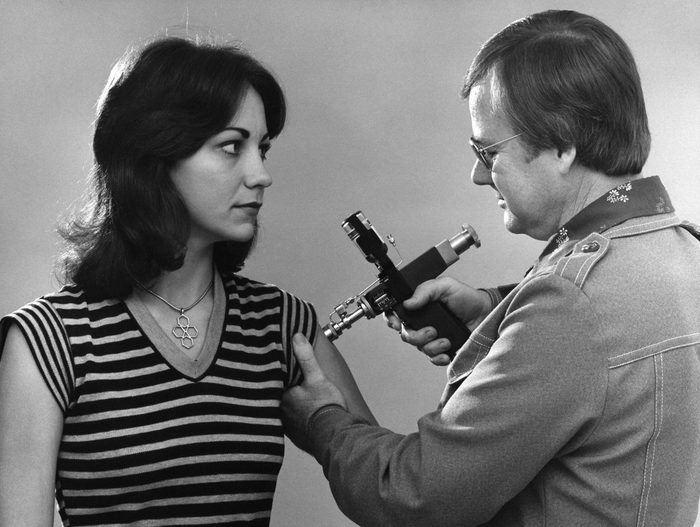
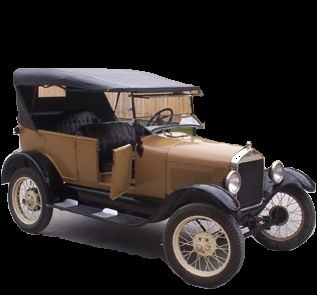
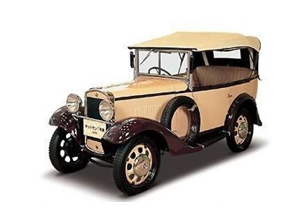
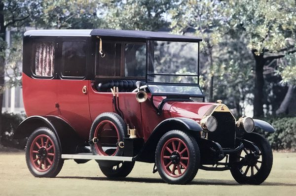
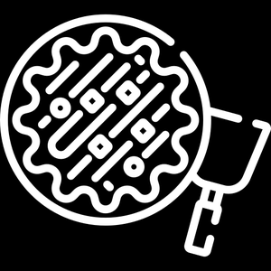
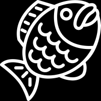
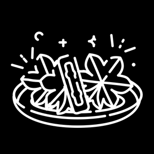
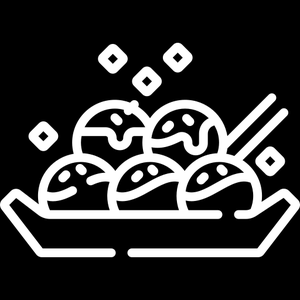

Início › Equipamento
Itens, Medicina & Serviços
Criação de itens, atendimento médico, transporte, roupas e comida no Japão de 1934.
Criação de Itens (Crafting)
Criar itens é uma habilidade única: com os componentes certos, um novo item pode ser criado. O uso dos itens e as habilidades que eles ganham ficam totalmente a critério do Mestre.
Exemplo: um jogador cria um coquetel molotov com (Garrafa de Saquê) e (Pano), usando um teste de Intelecto com dificuldade 6 por serem dois componentes. O Mestre determina que os molotovs podem ser arremessados a uma distância igual à Força e explodem causando 3d8 de dano, incendiando o que atingirem.
| Nº de componentes | Dificuldade |
|---|---|
| 1 | 4 |
| 2 | 6 |
| 3 | 8 |
| 4 | 10 |
| 5 | 12 |
| 6 | 14 |
Atendimento Médico
Guia para determinar o limiar de ferimento de certos ataques — quanto maior o dano, pior o ferimento:
- Ferimentos Graves — 13 a 20 de dano: órgão contundido ou ossos quebrados.
- Ferimentos Quase Fatais — 20+ de dano: membros perdidos ou órgãos perfurados.
A partir de ferimentos Graves, o jogador deixa de poder se curar até a vida cheia. Receber um ferimento Grave ou Quase Fatal remove 10% da vida total até receber os cuidados de um cirurgião ou médico.
Há vários tipos de suprimentos médicos em lojas gerais e consultórios. Jogadores feridos gravemente precisam encontrar um local com médico — falando com Kakushi ou médicos comuns, que realizam tratamentos e até cirurgias. Quando próximos desses locais, também é possível chamar médicos pelo rádio, embora levem tempo para viajar e cheguem sem a maioria das ferramentas para cuidados mais intensivos.
Primeiros Socorros
| Item | Efeito |
|---|---|
| Bandagem | Rolo de bandagem estéril para cortes e arranhões menores; estanca sangramentos. Cura 1d4 + Medicina. |
| Curativo Grande | Bandagem de pano espesso para ferimentos e cortes maiores, promovendo a cicatrização. Cura 1d8 + Medicina. |
| Tala | Suporte rígido que estabiliza ossos quebrados até o tratamento adequado. Não cura, mas evita dano adicional. [Estabiliza ossos quebrados] |
| Kit de Primeiros Socorros | Kit completo com suprimentos variados para uma gama de lesões. Cura 1d20 + Medicina. |
| Equipamento Cirúrgico | Conjunto especializado para cirurgias e procedimentos avançados. Pode curar todo o dano e restaurar a vida completa. Exige um teste de medicina altíssimo; falha crítica pode matar instantaneamente. [Cura Total] |
Equipamento médico exige uma ação completa, a menos que o jogador tenha desbloqueado a reação [Treinamento Médico].
Auxílio Experimental
- Seringa de Sangue de Demônio
- Seringa com sangue de demônio curado, capaz de curar instantaneamente ossos quebrados, lacerações e outros ferimentos graves. Porém traz efeitos colaterais: só pode ser usada 3 vezes antes de causar danos violentos como ataques cardíacos ou convulsões. Requer teste de medicina e um turno completo para administrar. [Cura de Vida Total]
- Injetor a Jato de Sangue de Demônio

Injetor a jato em uso (foto do livro original). - Dispositivo elegante e futurista de acabamento metálico e detalhes vermelhos brilhantes, que administra a dose curativa instantaneamente ao apertar um botão — sem teste de medicina. Como a seringa, só pode ser usado 3 vezes antes dos efeitos colaterais. Mais caro, porém mais rápido e fácil de usar. [Cura de Vida Total]
- Analgésicos (Auxílio Secundário)
- Pequenos comprimidos brancos que aliviam a dor temporariamente e concedem um pequeno impulso de vida — essenciais para quem precisa de cura rápida em batalha. Concedem 1/4 da vida total como bônus temporário; o efeito passa após uma hora e, se o jogador não tiver recebido cuidados desde então, o dano permanece.
Transporte
Dirigir pode ser uma forma empolgante e conveniente de viajar. Jogadores podem chamar um Kakushi para transporte ou juntar os ganhos das missões para comprar um carro numa concessionária.
- Direção casual: em condições normais, um teste de Fineza determina o manejo do veículo (a CD varia com estrada, clima e visibilidade).
- Perigos na estrada: diante de perigos inesperados — animais ou pessoas na pista, obstáculos, mudanças súbitas de tráfego —, faça um teste de Tempo de Reação (CD conforme a severidade e a subitaneidade do perigo).
- Chamar assistência: quem não possui carro pode contatar um Kakushi por rádio ou corvo, que virá prestar o serviço de transporte.



| Veículo | Descrição | Bônus | Custo |
|---|---|---|---|
| Ford Modelo T | Clássico americano conhecido pela durabilidade e preço acessível. Exterior preto com raios de madeira nas rodas e interior espaçoso. | +1 em testes de Destreza (engenharia confiável) | ¥600 (~¥20.000 de 1934) |
| Datsun Tipo 10 | Carro japonês pequeno, de design elegante e direção suave. Exterior azul-escuro aerodinâmico. | +2 em testes de Destreza (manobrabilidade ágil) | ¥1.200 (~¥40.000 de 1934) |
| Mitsubishi Modelo A | Carro de luxo, de aparência refinada e recursos avançados. Exterior preto e prata, bancos de couro e madeira polida. | +1 em todos os testes de Veículo (engenharia e conforto) | ¥3.000 (~¥100.000 de 1934) |
Roupas
Roupas fornecem camuflagem instantânea em situações apropriadas. Jogadores só podem ser descobertos se NPCs passarem num teste de intuição — ou se forem delatados.
Roupas civis
- Roupa Civil: simples e prática, para o dia a dia; conforto e durabilidade.
- Roupa Elegante: luxuosa e refinada, de materiais de alta qualidade; para eventos formais e ocasiões especiais.
- Roupa Chamativa: ousada e vistosa, feita para marcar presença — cores vivas, padrões intrincados e acessórios decorativos.
- Roupa de Dormir: confortável e aconchegante, para dormir ou descansar em casa.
- Roupa de Fazenda: durável e funcional, com tecidos firmes e costuras reforçadas para o trabalho braçal.
Roupas únicas
- Uniforme do Esquadrão: uniforme especializado dos Caçadores, feito de material que resiste ao sangue ácido dos demônios. Fornece +1 de CA.
- Uniforme de Polícia: uniforme padrão das forças da lei. +1 de Intimidação para interrogar suspeitos e acesso a recursos e informações policiais.
- Uniforme de Guarda: usado por guardas e seguranças. Dá acesso a locais fortificados e instalações seguras.
- Uniforme de Artista: vistoso e elaborado, usado por artistas e animadores. Dá acesso a bastidores e eventos exclusivos.
Comida
Refeições podem ser compradas em restaurantes e barracas pelo mundo do jogo. Comer o prato certo na hora certa pode dar um pequeno bônus de vigor, crucial em batalhas intensas.
Pratos com bônus (vigor temporário que some ao ser usado)
- +10 Vigor Bônus — Lámen: Tonkotsu (caldo cremoso de porco), Missô (caldo encorpado de pasta de soja) ou Tsukemen (macarrão servido separado do caldo espesso).
- +5 Vigor Bônus — Sushi: Nigiri, Maki ou Temaki.
Pratos de recuperação (reabastecem vigor perdido, sem bônus)
- +10 Vigor — Bentô: marmita com arroz, carne ou peixe e legumes. É a única refeição portátil, feita para comer depois.
- Curry com Arroz, Yakitori (espetinhos de frango grelhado) e Donburi (tigela de arroz com coberturas).
Petiscos (sem benefício mecânico — presenteie NPCs para melhorar o humor deles e as relações)




| Petisco | Descrição | Custo |
|---|---|---|
| Dango | Bolinho doce de mochi, servido em espetos de três ou quatro. | ¥4 |
| Manjū | Doce tradicional de pasta de feijão doce envolta em massa de farinha. | ¥5 |
| Senbei | Biscoito de arroz japonês, temperado com shoyu ou outros temperos. | ¥3 |
| Taiyaki | Bolinho em forma de peixe, tradicionalmente recheado com feijão doce, chocolate ou creme. | ¥8 |
| Okonomiyaki | Panqueca salgada de farinha, ovos e repolho, coberta com carne ou frutos do mar, molho e maionese. | ¥10 |
| Takoyaki | Bolinhas de massa recheadas com polvo, cebolinha e gengibre em conserva, com molho e maionese. | ¥10 (6 unidades) |
Alguns NPCs têm preferências — oferecer o petisco certo na hora certa pode render favores ou recompensas extras.